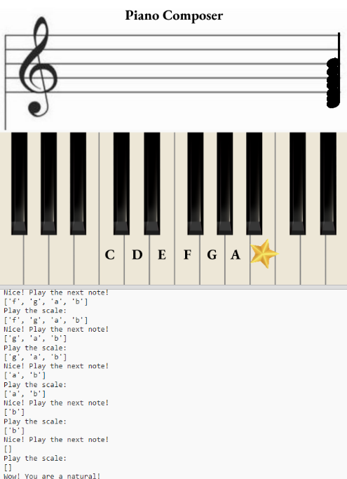
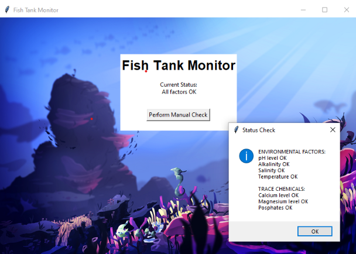
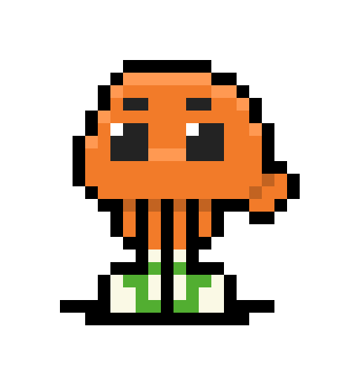
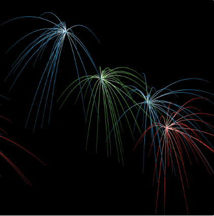
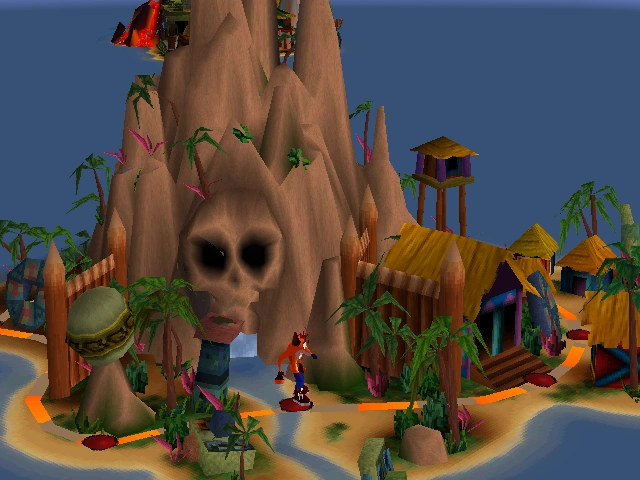
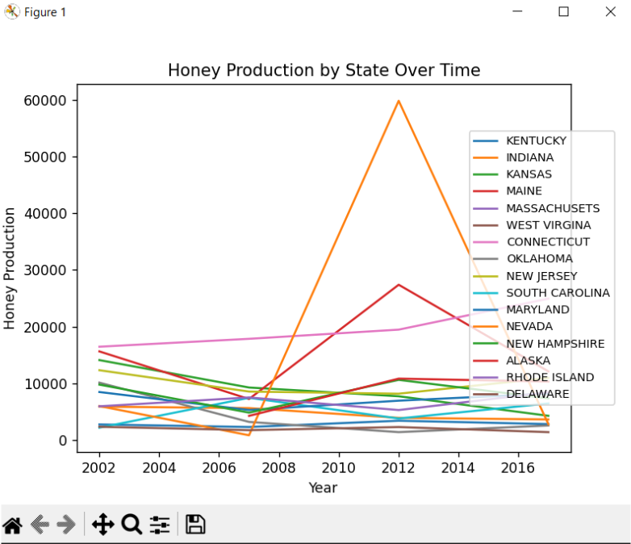

Home
Portfolio
About Me
This is my Portfolio Page!

Project 1.1.9! Welcome to our boba shop. ૮ ˶ᵔ ᵕ ᵔ˶ ა

In this interactive game, the user can choose what kind of boba they want, which will then populate the boba of their choice onto their screen.
The user is then prompted to answer whether they liked the boba or not, and depending on their response, they are met with a different stock photo reaction.
Project 1.2.5! Become a Piano Composer. ♪ ♫ 🎧

In this game, the user uses keys that correspond with notes they are prompted to type in order to move notes across the score.
There are two different difficulty levels, and different scales to play will populate based on the level. 🎹
Scratch project! Bake a cake with us. ଘ(੭*ˊᵕˋ)੭* ੈ♡‧₊˚┌iii┐♡
In this game, the user is prompted to build a cake and is rated at the end on their ability to do so! They will recieve a rating out of three stars.✮✮✮
Project 2.1.6! Phishing ≧( ° ° )≦


In this project, I downloaded and decrypted encrypted files to implement in a software program called fishtank.py.
I then debugged the program so that there were no "Unexpected Error" messages in the terminal, and all of the values in the pop up would appear as "OK"!
Project 4.1.4! Fireworks Simulation! (∩｀-´)⊃━☆ﾟ.*･｡ﾟ

In this project, we identified and asnwered questions to help us understand how this fireworks simulation work. By looking at the code and summary of the simulation, we figure out how the simulation ran.
The velocity at which a firework is shot up will affect the arch at which the rockets are shot up. X Velocity can shift rockets to shoot to the left or right, and the y-velocity changes the height of firework being shot.
Gravity also affects how high the fireworks will shoot up, and whether they continue going straight up when they explode or will have fragments coming down.
Project 3.1.6! Which island? ଳ⋆｡˚

In this project my partner and I analyzed a large list of unsorted data. Based on the patterns that we saw, we split the data into different sections like light, temperature, wind speed, and noise.
We then created different graphs of the different options of islands that we had, and made graphs of the data as well. We went through the differnt criteria for the data and matched the data that we had graphed to potential islands.
After a couple of rounds of trial and error and continuously analyzing our graphs, we predicted that the tropical island was the correct match to the data that we collected. Were we correct..?
Project 3.2.4! Honey Simulation! ʕ •ᴥ•ʔ

In this project I analyzed and organized data with my partner using matplotlib and python conjointly. We created sheets and organized our data to simplify the infomration that was given to us.
We also created several organized graphs that showed our data in a more consise and understandable way. This allowed us to create predictions for the data, which we answered in our project.